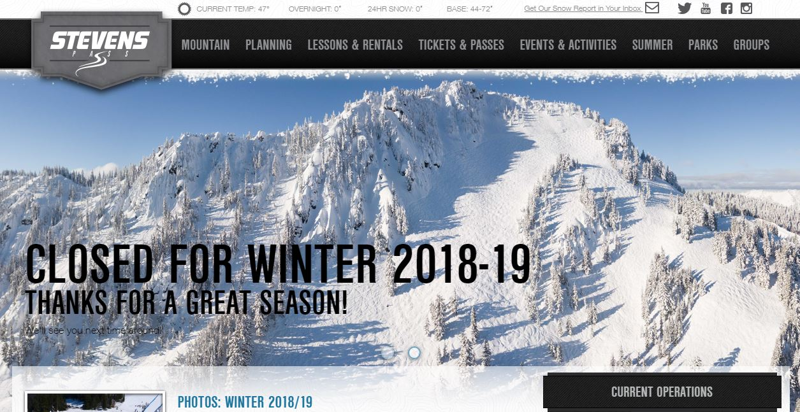
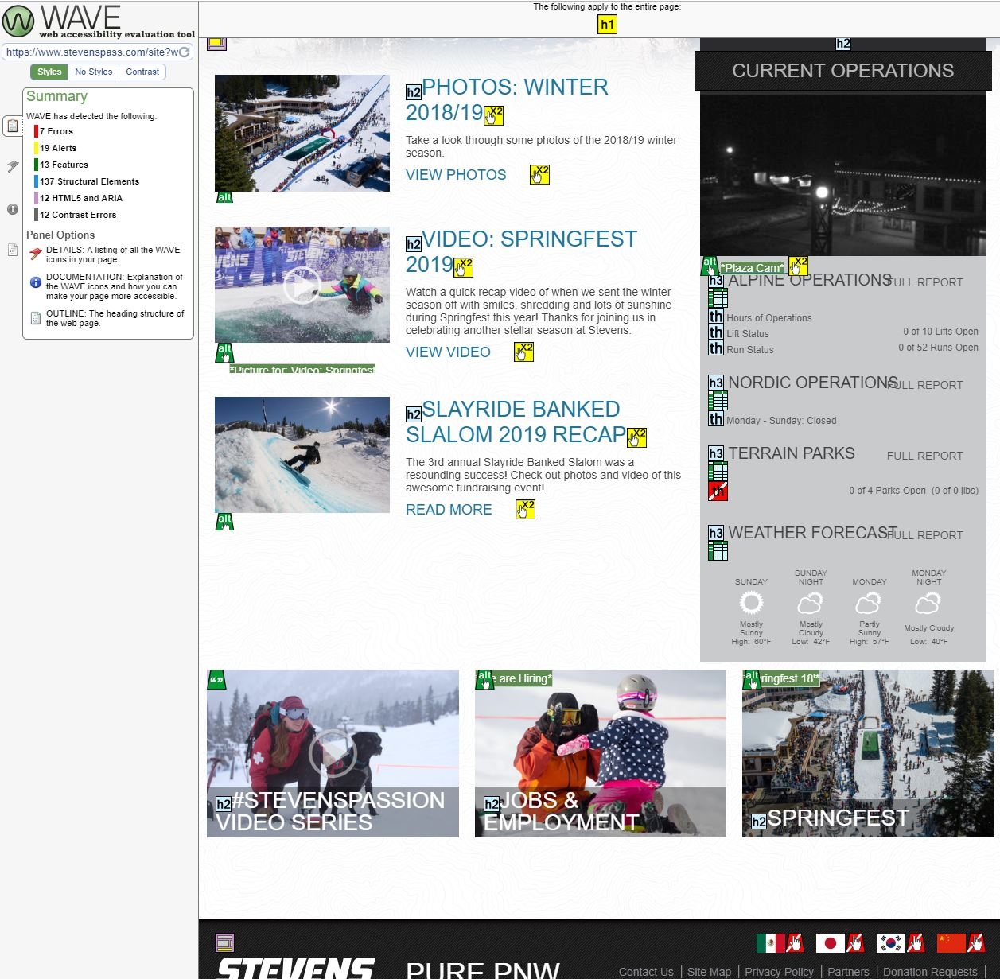
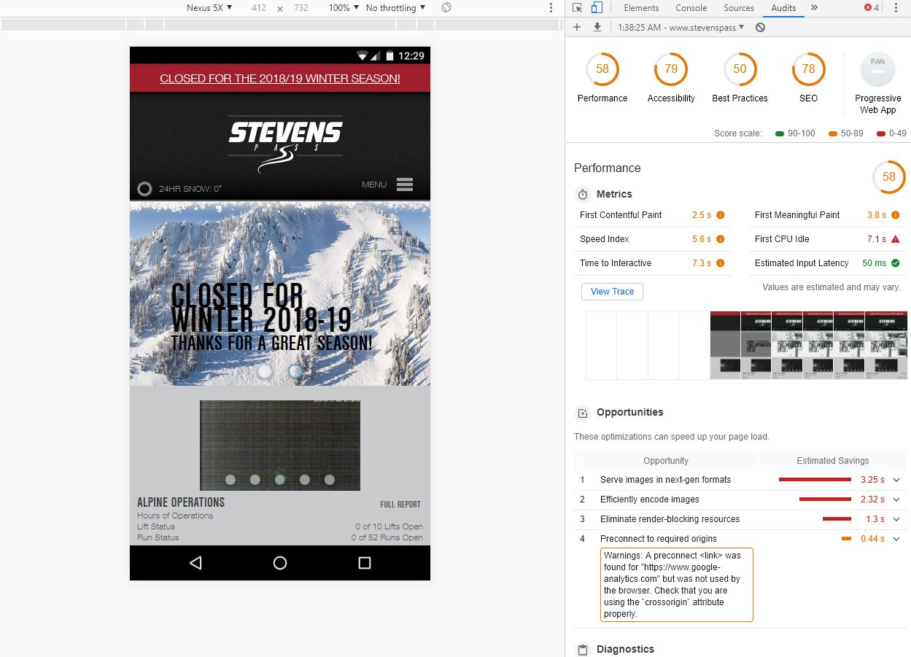

Today I’ll be looking at another portion of using the web that often gets overlooked: Accessibility. There are millions of people in the United States who have a disability that impairs their use of the web. If a website isn’t up to today’s accessibility standards then it may be doing its customers a disservice or even breaking the law. To explore this concept I’ll be taking a look at the local mountain resort Stevens Pass to see if their site passes some tests.
What Does Accessibility cover?
Defining accessibility is a bit more nuanced then you might think. First of all there are blind users who use screen readers and text to speech devices to help navigate the web. Compensating for the blind usually means clearly labeling alternate text for images along with presenting valid audio options such as text to speech. Some users have physical limitations that prevent them from using a standard mouse and keyboard. Making sure that the site is navigable with only mouse or only keyboard can be a huge boon for the physically disabled. There are many more aspects to consider such as contrast that can greatly improve web access.
To test Stevens Pass I’m going to utilize a few tools designed to simulate how a disabled user would see the site. First I’m going to run it through WAVE which scans elements to see if they meet section 508 compliance (the US law for accessibility). I also will use acchecker which is the canadian version of WAVE. Google lighthouse is a built in tool for google chrome that generates a report of the website under simulated conditions such as bad cell data. Between all of these tools I was able to get a solid read on Stevens Pass’ website.
Testing 1,2,3...
Stevens Pass may be a ski resort but that certainly doesn't stop the disabled from enjoying the slopes. I was pleasantly surprised to see that WAVE had very few issues with the site. The primary problems it had were with elements that were entirely visual, in this case the language selections in the footer. This could be easily solved with a little bit of alt text. The other issue was redundancy and noscript elements but both were non intrusive so I didn’t really think it was a problem. AcChecker provided almost identical results which made a good impression on me.
Google Lighthouse presented a new set of issues this time mostly around performance. While having a fast website is not necessarily an accessibility issue it does vastly improve the usability of those on limited networks. With some painfully slow load times of around 9 seconds on simulated 4g using Stevens Pass’ website is not cutting it. The primary contributor to this is the excessive amount of photos on the home page. The Cache and DOM were also unreasonably large slowing things down even more. This is unreasonable for their target audience who would likely be in low cell service areas. The cumbersome experience presented here would be severely detrimental to more than just disabled users and desperately needs improvement.
 A look at Google lighthouse performing a test on Stevens Pass home pageMy main takeaway from this test is that meeting accessibility standards isn’t actually that hard but stylistic choices can get in the way. While Stevens Pass does have some issues most of them are minor. Nothing was explicitly broken or in the way of what a disabled user would need. The proper use of aria tags and alt tags throughout the site was commendable. The biggest change I would recommend would be to improve performance as that heavily impacted all users. Implementing these changes should be straightforward and easy to fix.